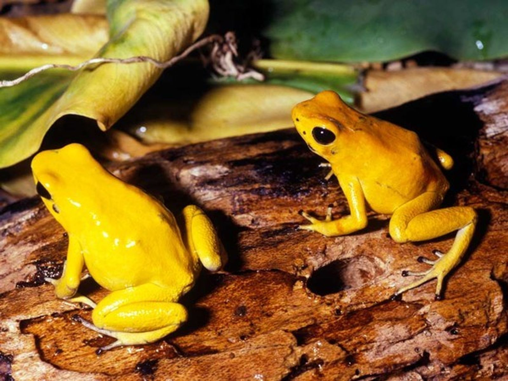
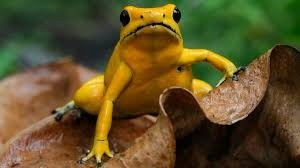

Rana Dorada (Phyllobates terribilis)
Ubicación: bosques húmedos (al igual que el Oso de Anteojos) del Chocó y en las reservas situadas en el Cauca.
Altura: por encima de los 2000 metros sobre el nivel del mar.
Estado de conservación: Vulnerable.